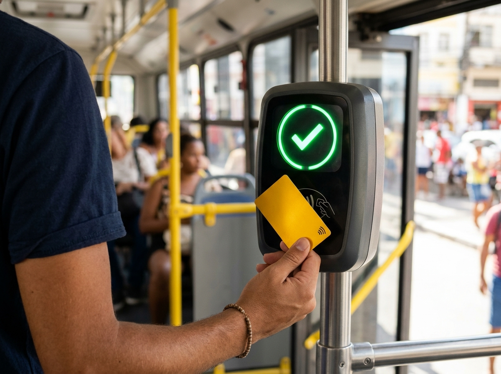
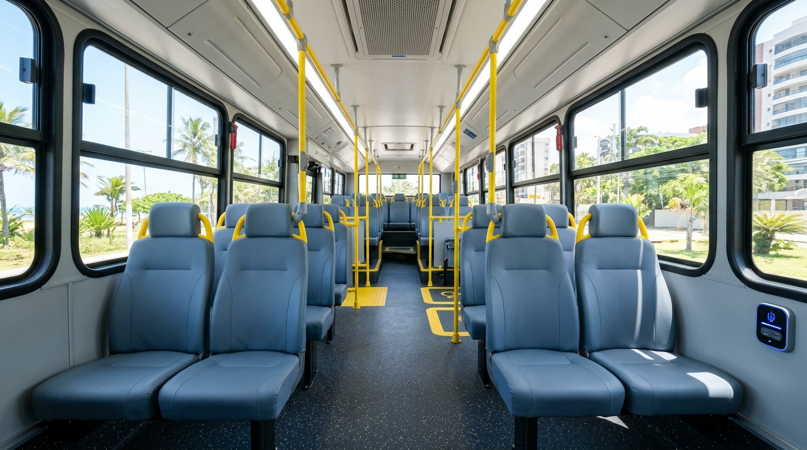
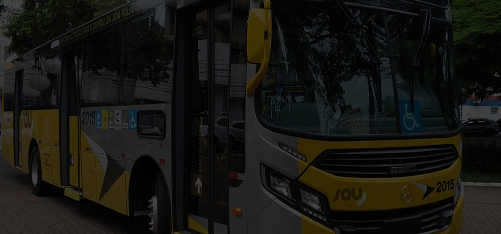
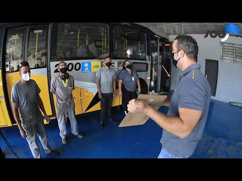
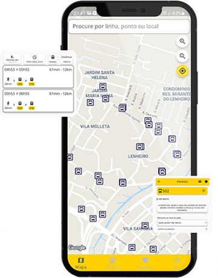
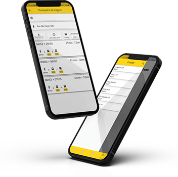

Ar-Condicionado Eficiente
Temperatura agradável o ano inteiro, pensada especialmente para os dias quentes do verão no Litoral Norte.
Viaje com mais conforto e previsibilidade nos ônibus SOU Caraguá: frota equipada com ar-condicionado, Wi-Fi grátis, tomadas USB e 100% acessível, GPS ao vivo no aplicativo e Integração Temporal de 90 minutos com o Cartão SOU.
Linhas diretas como 101, 116, 117, 302 e 306 levam moradores e visitantes às principais praias com conforto térmico.
Conexões rápidas com o Terminal Rodoviário, UPA Sul, Hospital Regional e escolas em toda a extensão da SP-055.
Digite o nome do seu bairro, praia, hospital ou número da linha para consultar os trajetos operados pela SOU Caraguá e acessar os horários oficiais.

Ideal para todos os moradores e trabalhadores de Caraguatatuba. A emissão da 1ª via é gratuita.
Facilita o deslocamento diário de estudantes regularmente matriculados em Caraguatatuba conforme legislação municipal vigente.
Solução prática e segura para empresas de Caraguatatuba gerenciarem a compra de créditos e a retirada de cartões dos colaboradores.
Garantia de mobilidade digna com 100% da frota equipada com elevadores, assentos reservados e balaustres táteis.
Descubra o impacto real no seu bolso ao usar o Cartão SOU para fazer conexões entre bairros e o Centro sem pagar uma segunda tarifa no mesmo sentido.
*Cálculo ilustrativo considerando tarifa vigente de R$ 5,00 e 4,4 semanas/mês com aproveitamento da integração de 90 min.
Quero Meu Cartão SOU Agora ↗Com renovações recentes e idade média reduzida para cerca de 2 anos, os coletivos da SOU Caraguá oferecem tecnologia Euro 6, conforto térmico e inclusão em cada viagem.

Temperatura agradável o ano inteiro, pensada especialmente para os dias quentes do verão no Litoral Norte.
Navegue e carregue seu smartphone durante o trajeto para o trabalho, faculdade ou praia.
Todos os veículos contam com elevadores para cadeirantes, espaço reservado e balaústres táteis.
Tecnologia avançada de baixa emissão de poluentes, ajudando a preservar a natureza de Caraguá.

Ônibus convencionais e micro-ônibus 0km identificados com o padrão amarelo de Caraguatatuba para fácil visualização nos pontos.

Equipe técnica especializada, câmeras embarcadas e vistorias constantes junto à Secretaria de Mobilidade Urbana.


Com o aplicativo oficial SOU – Sistema de Ônibus Urbano, você acompanha os ônibus de Caraguatatuba em tempo real no mapa, confere o trajeto completo e planeja sua viagem antes de sair de casa.
Acompanhe novidades da frota, avisos de linhas, campanhas educativas e bastidores do transporte urbano.
Precisa emitir a 1ª via gratuita do Cartão SOU, tirar dúvidas sobre cadastro escolar, vale-transporte ou recarregar presencialmente?
Terminal Rodoviário de Caraguatatuba/SP — Rua Primeiro Centenário dos Batistas, s/n (Av. Brasília), Bairro Jardim Jaqueira (guichê ao lado do bicicletário).
Segunda a sexta-feira, das 8h às 18h.
Terminais de autoatendimento no Caraguá Praia Shopping, rede de comércios credenciados PIU e App SOU Recargas.
Atendimento via WhatsApp/SAC 0800 460 0800 e chat de suporte no portal oficial SOU Caraguatatuba.
A 1ª via do Cartão SOU Comum é gratuita. Basta comparecer ao guichê da SOU localizado no Terminal Rodoviário de Caraguatatuba (Jardim Jaqueira, ao lado do bicicletário), de segunda a sexta-feira, das 8h às 18h, levando seu documento de identidade original (RG) e CPF.
Ao pagar a passagem com o Cartão SOU, você tem direito a embarcar em um segundo ônibus no mesmo sentido da viagem dentro de até 90 minutos sem pagar uma nova tarifa. Isso permite conectar bairros distantes ao Centro, escolas e praias pagando apenas uma passagem (R$ 5,00).
Você pode recarregar digitalmente pelo aplicativo SOU Recargas (rede parceira PIU). Como os validadores nos ônibus sincronizam os créditos durante a operação, recargas digitais têm prazo de compensação de até 72 horas. Se precisar do crédito na hora, recarregue no guichê da Rodoviária ou nos pontos credenciados com terminal online.
Você pode acompanhar o itinerário e a previsão de chegada em tempo real pelo aplicativo SOU – Sistema de Ônibus Urbano (Android e iOS) ou consultar as tabelas completas acessando o portal oficial soutransportes.com.br/caraguatatuba/.
No portal oficial da SOU Caraguatatuba estão disponíveis os formulários de Cadastro Escolar, Retirada de Cartões VT e compra de Vale-Transporte para empresas. Estudantes também devem validar a matrícula junto à secretaria da sua instituição de ensino conforme o calendário escolar.
Sim! A frota renovada da SOU Caraguá conta com ar-condicionado, Wi-Fi gratuito, tomadas USB para recarga de celulares, motores Euro 6 de baixa emissão e 100% de acessibilidade com elevadores para cadeirantes e balaustres táteis.
Acesse o portal oficial da SOU Caraguatatuba para horários, formulários e atendimento, e siga o perfil oficial no Instagram para ficar por dentro de todas as novidades.